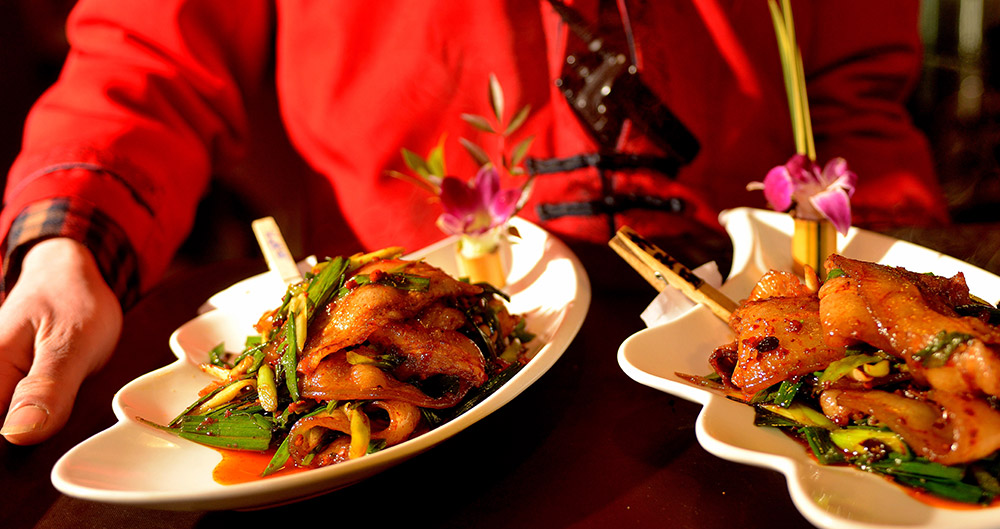

MYBLOG

欢迎来到小明的博客~
2018/08/08散文札记
爷每天5点起床，去鸡行里选鸡，选的是大小均匀的老母鸡，送到家里从杀鸡放血开始，鸡血要留着，倒在有盐水的碗里，烧好开水拔了毛连鸡嘴巴鼻子里的粘液都要挤出来。鸡洗干净六只鸡放到一个锅里炖，要炖一个上午，要注意火候鸡皮不能裂。
炖好的鸡挂在架子上晾干，再一片片剁开，每只鸡剁的块数都是一样，然后把鸡肉放到提前调好的水中腌两个小时，水里面的调料也是爷爷自己去市场买来磨成粉的。锅里还有剩的鸡汤，用鸡汤煮好面叶上面漂着一层绿油油的葱花。
以前爷爷都是用扁担一头面叶一头板鸡挑到街上摊位上卖，现在爷爷年纪大了，只能用三轮车推着。摊位摆好奶奶就会慢悠悠的拎着一个保温桶和一个小红桶过来，保温桶里装的是卤鸡蛋，小红桶留着装别人吃剩的骨头喂狗。他们只有晚上出摊，收完摊已经要9点钟了，回去还要洗一天用的抹布和衣服，爷爷奶奶都非常爱干净，摊上的所有抹布纱布都是白色的每天洗的一个油点都看不到。9年前奶奶去世了，爷爷奶奶青梅竹马感情非常好，奶奶去世的时候爷爷甚至还要求过把奶奶埋在院子里。现在爷爷有时候会偷偷跟我说，你奶奶昨天回来看我了，她还给我掖被子，我知道是她，我跟她说你别挂念我，我好的很 跑题了。
昨天我给爷爷打电话，他跟我说他卖板鸡有人给他拍照，他问别人你拍我干嘛，那个人回答他说我给你照片放到网上，你生意会更好，我爷爷说你不用放网上我都不够卖的。